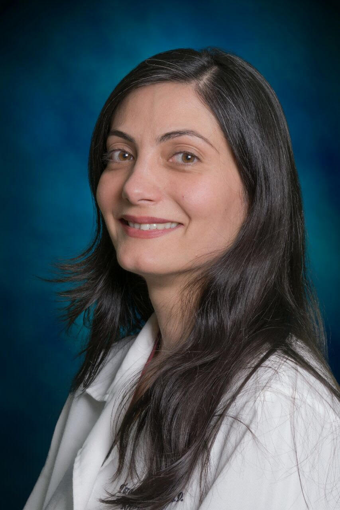

Expert Care for Arthritis & Autoimmune Diseases
Providing compassionate, evidence-based rheumatology care in Washington, DC. Assistant Professor of Medicine at Georgetown University with over a decade of experience treating complex rheumatic conditions.

Dedicated to providing exceptional rheumatology care with a patient-centered approach
Dr. Tahereh Jamshidi, known to her patients as Dr. Tara Jamshidi, is a board-certified rheumatologist with extensive experience in diagnosing and treating autoimmune and inflammatory conditions. She currently serves as Assistant Professor of Medicine at Georgetown University and provides care at the DC VA Medical Center.
With over 14 years of clinical experience, Dr. Jamshidi has dedicated her career to helping patients manage complex rheumatic diseases including rheumatoid arthritis, lupus, scleroderma, and various autoimmune conditions. She takes pride in developing personalized treatment plans that improve quality of life while minimizing side effects.
Dr. Jamshidi previously served as Chief of Rheumatology at Providence Hospital and held leadership positions in the Rheumatism Society of the District of Columbia, including serving as President from 2020-2021. She has been recognized as a Washingtonian Top Doctor and received multiple teaching excellence awards.
Comprehensive care for a wide range of rheumatic and autoimmune diseases
Expert management of RA using the latest biologics and disease-modifying treatments to reduce inflammation and prevent joint damage.
Comprehensive care for systemic lupus erythematosus with personalized treatment plans to manage symptoms and prevent flares.
Specialized treatment for systemic sclerosis and related conditions, including RNAP III scleroderma management.
Advanced therapies for psoriatic arthritis to control joint inflammation and skin manifestations.
Effective treatment for crystal-induced arthritis with both acute management and long-term prevention strategies.
Expert diagnosis and management of various forms of blood vessel inflammation.
Comprehensive treatment plans including medications, joint injections, and lifestyle modifications.
In-office arthrocentesis and therapeutic joint injections for rapid symptom relief.
Diagnosis and treatment of various autoimmune conditions including Sjögren's syndrome, polymyositis, and more.
Conveniently located in Washington, DC
📍 50 Irving Street NW
Washington, DC 20422
☎️ VA patient scheduling
🏥 Washington DC Veterans Affairs
Providing comprehensive rheumatology care to our nation's veterans.
Common questions about rheumatology care and appointments
Take the first step toward better joint and autoimmune health
Veterans can schedule through the VA patient scheduling system or by contacting the DC VA Medical Center directly.
Address:
50 Irving Street NW
Washington, DC 20422
Monday - Friday: 8:00 AM - 5:00 PM
Saturday - Sunday: Closed
Hours may vary. Please contact the office for exact scheduling.